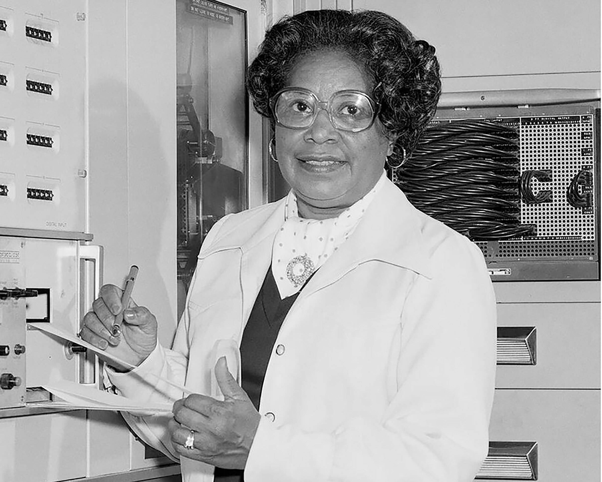

Dorothy Johnson Vaughan
Matemática e Primeira Supervisora Afro-Americana da NASA (1910 – 2008)

Liderança e Quebra de Barreiras
Dorothy Johnson Vaughan foi uma distinta matemática formada pela Wilberforce University. Ela ingressou no Langley Memorial Aeronautical Laboratory (NACA, posterior NASA) em 1943. Em 1949, tornou-se a primeira mulher afro-americana a ser promovida a supervisora na agência, chefiando a unidade West Area Computing, composta por brilhantes matemáticas negras.
Visão Tecnológica e Transição para a Era Digital
Quando a NASA começou a introduzir os primeiros computadores eletrônicos mainframe da IBM na década de 1960, Dorothy percebeu rapidamente que o trabalho de cálculo manual seria automatizado. De forma totalmente autodidata, aprendeu a linguagem de programação FORTRAN e ensinou suas subordinadas.
Contribuição para a Corrida Espacial
Graças ao seu espírito de liderança e antecipação tecnológica, sua equipe assumiu a Seção de Programação da Divisão de Análise e Computação de Langley. As contribuições do seu grupo foram cruciais para os programas espaciais Scout e Mercury, incluindo o voo orbital histórico do astronauta John Glenn. Sua jornada foi retratada no aclamado filme e livro Estrelas Além do Tempo (Hidden Figures).
"Mudei o que pude, e o que não pude, eu suportei." — Dorothy Vaughan